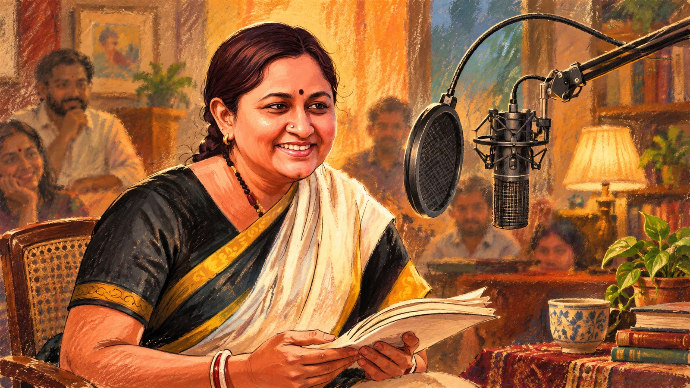

Under the Tree
Tamil short fiction, spiritual texts, epic literature, self-development, translated ideas, temple traditions and stories for children — shaped for listening.
Enter the audio world ↗Tamil storyteller · Author · Founder, Under the Tree
Ramya Vasudevan is a Chennai-based storyteller and author whose work moves between Tamil literature, spirituality, children’s storytelling, books, classrooms and public conversations. Through Under the Tree, she has built a sustained audio practice that brings stories and ideas from the page into everyday listening.
Under the Tree begins as a recurring story-sharing practice.
audio stories donated to Sevalaya’s Digital Audio Library in 2025.
spiritual writing, literary work, self-development and children’s literature.
Apple Podcasts lists Under the Tree as an actively updated Tamil storytelling feed.
Her work
Reading is the starting point. Narration, writing, teaching, archives and public dialogue are the different ways the work travels.
Tamil short fiction, spiritual texts, epic literature, self-development, translated ideas, temple traditions and stories for children — shaped for listening.
Enter the audio world ↗From Lalitha Sahasranamam commentary and spiritual biography to literary writing, self-development, Srirangam reflections and children’s fiction.
Visit the bookshelf ↗Teaching, workshops, mentoring and children’s education sit alongside her storytelling — with audio also used to widen access to reading.
See education & impact ↗
Under the Tree · story as daily practiceThe voice behind the archive
What began in a school-friends WhatsApp group grew into a multi-platform storytelling archive. Ramya reads widely, makes notes, checks difficult references, condenses material for audio and records in a conversational style designed to preserve the emotional pull of the original.
Her repertoire stretches from Tamil masters and contemporary writers to Ramayana, Lalitha Sahasranamam, Ramana Maharshi, temples, children’s stories and global non-fiction.
“There is no friend quite like a book — it keeps giving.”
On the page
Her bibliography crosses spirituality, literary reflection, self-development and children’s writing.
Stories in public life
Her recordings have travelled beyond podcast feeds into public-library and school settings. In July 2025, Sevalaya opened a Digital Audio Library with 2,500 stories donated by Ramya, intended for students, teachers, elders and other listeners.
donated free of cost to Sevalaya’s Digital Audio Library at Kasuva.
Visual journal
A painterly gallery follows the many environments in which reading and storytelling take shape.
Listen to Under the Tree, browse the books, or follow the journey from reading and teaching to a growing audio archive.